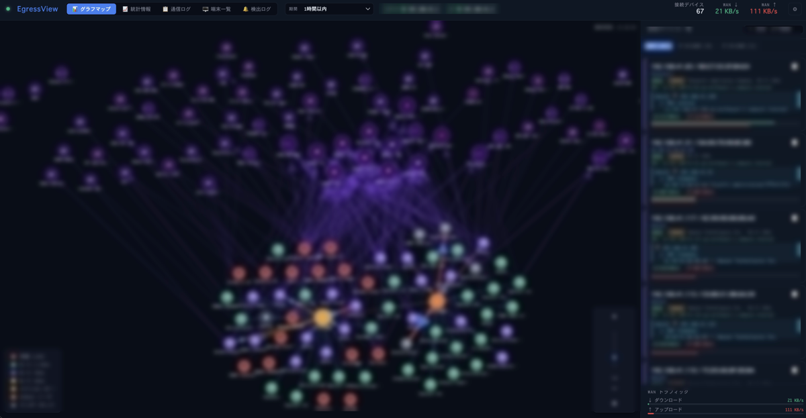
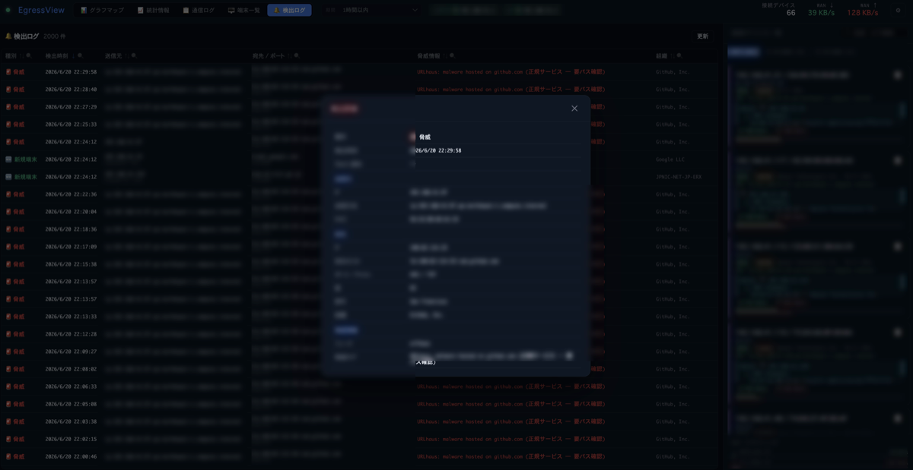

Start from a different premise
If your plan is only to keep attackers out, you have no plan for the day one gets in.
Patching, authentication, perimeters — all necessary, all eventually bypassed. Designing as though one will fail is simply realistic.
Stolen data is only lost once it is sent. Most intrusions also need to reach back out for instructions before they can go further.
Firewalls and WAFs mostly face inward. What goes the other way tends to pass quietly.
A destination alone no longer tells you anything
Attackers relay through legitimate cloud services. The destination looks like a trusted domain, because it is one.
A machine makes a small connection to a major CDN every five minutes. What is it?
You cannot answer from the destination. It could be a software updater checking in. It could be malware collecting instructions. Both can use the same address.
What separates them is which application opened the connection. That is what EgressView records.
| What you see | Destination only | With the application |
|---|---|---|
cdn.example.net — 5 min |
Cannot tell | SoftwareUpdate — expected |
cdn.example.net — 5 min |
Cannot tell | An unfamiliar process — worth looking at |
Two pieces, and only two
Either works on its own. Together they make one record of the whole network.
EgressView Agent
Records that Mac's outbound connections, each with the name of the application that made it.
- Which app reached which country, domain and address
- Threat lists are matched on the Mac itself
- Gaps in the record are shown as gaps
EgressView Hub
Watches every device from the router, and folds in what the agents report, into one history.
- Sees devices that cannot run an agent — IoT, TVs, printers
- Fetches the threat lists and hands them to the agents
- Runs on your hardware. Nothing goes to a cloud

What it never does
Installing a monitoring tool means trusting it. So here is what it does not do.

Is this for you?
A good fit
- You want to know what your own Mac talks to
- You want the record to stay on your own hardware
- You look after a home or small-office network
- You have a Yamaha RTX or Cisco IOS router — for the Hub
Not a fit
- You want something that blocks or defends
- You need agents for Windows or Linux — macOS only today
- Your router is not one of the two supported — for the Hub
- You want a hosted service someone else operates
Getting started
The agent alone takes a few minutes. The Hub can come later, or never.
- Download and open it. A signed, notarised installer.
- Approve network monitoring. macOS asks once.
- That is all. The record stays on that Mac and is sent nowhere.